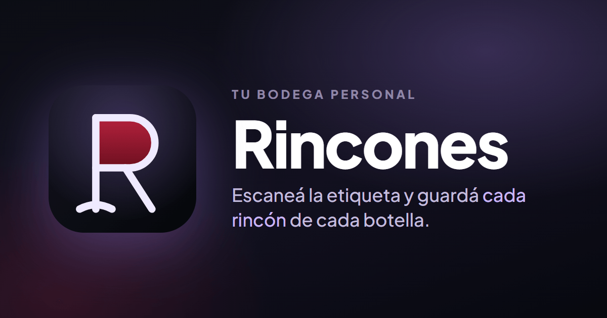

Live in production
Rincones · Full-stack / AI-powered PWA
React
TypeScript
Node.js
Express
MongoDB
Google Gemini
A full-stack PWA for managing a personal wine cellar. Take a photo of a label and Google Gemini reads it and pre-fills the entry (with a local OCR fallback), so adding a bottle takes one photo instead of a form. JWT auth, an admin panel, and 260+ automated tests back it up. Installs like a native app, with real users today.